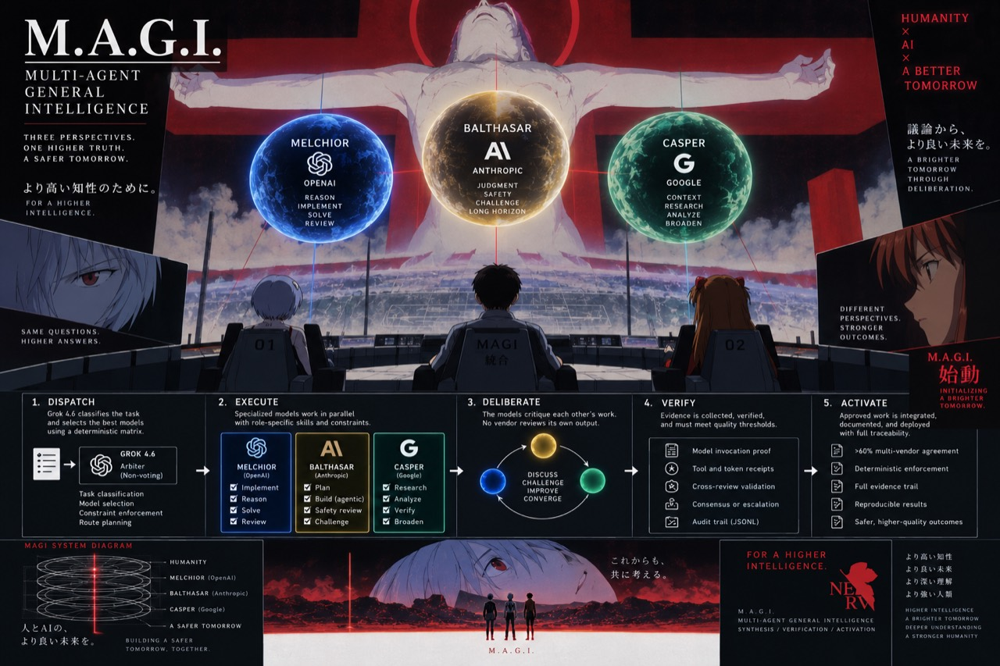

{kind=link}
{kind=link}
MELCHIOR / OPENAI
Technical depth.
Implementation, debugging, and adversarial review. The OpenAI ladder runs from Luna through Terra and Sol to Astra. Every Astra route needs a recorded escalation reason.
Three AI vendors build, challenge, plan, research, and verify. A fourth-vendor arbiter routes the work. Sealed plans and native evidence hold the system to its rules.

Melchior, Balthasar, and Casper are vendor-separated seats. Grok classifies work, dispatches seats, and collects evidence. It supplies no substantive seat result or vote.
Implementation, debugging, and adversarial review. The OpenAI ladder runs from Luna through Terra and Sol to Astra. Every Astra route needs a recorded escalation reason.
Review, planning, safety, and long-running agentic implementation. Sonnet, Fable, and Opus are selected by role. Production proof requires native observed model and effort.
Context, breadth, and synthesis from a third vendor. agy must prove its exact observed model slug, including the fused effort. A silent substitution fails the dispatch.
Grok proposes a route. The validator checks the complete plan: task class, role, vendor, model, effort, scope, author provenance, escalation, and fresh availability evidence.
On narrow screens, scroll the table sideways. Keyboard users can focus it and use the arrow keys.
| Task class | Primary route | Alternates / escalation |
|---|---|---|
| Architecture / planning | Claude Opus · high | GPT-5.6 Sol · Gemini Pro · Astra escalation |
| Standard feature | GPT-5.6 Terra · medium | Claude Sonnet · Gemini Flash |
| Bulk / mechanical | GPT-5.6 Luna · medium | Gemini Flash · Claude Sonnet |
| Difficult debugging | Claude Fable · xhigh | GPT-5.6 Sol · Gemini Pro · Astra escalation |
| Long-running agentic work | Claude Fable · xhigh | Astra escalation · Gemini Flash · GPT-5.6 Sol |
| Long-context analysis / research | Gemini Pro · fused-high | Astra escalation · Claude Fable · GPT-5.6 Sol |
| Security-sensitive implementation | Claude Opus · xhigh | GPT-5.6 Sol · Gemini Pro · Astra escalation |
| Adversarial review | GPT-5.6 Sol · high | Claude Opus · Gemini Pro · Astra escalation |
| Extreme end-to-end implementation | GPT-6 Astra · high · escalation | Claude Fable · Gemini Pro |
Every exact model/effort pair needs native probe evidence. It expires 60 minutes after the original probe completes; re-importing it does not renew it. Unproven pairs remain unavailable. Astra always requires an escalation flag and a recorded reason.
The runtime seals the whole plan before a production dispatch. Each launch consumes a bound entry. Changed routes, scopes, briefs, or author claims fail validation.

Seal the complete plan against fresh model/effort probes, concrete scopes, and author provenance.
Leaf seats receive hashed rules and lean skills. Role permissions bound the work; post-run write audits reject out-of-scope changes.
Foreign reviewers challenge the work. Each captured response carries one APPROVE, ABSTAIN, or REJECT position.
Check native identity, usage, acknowledgments, artifact hashes, write audits, and committed outcomes.
Finalize execution and approval separately. Native POSITION tallies decide critical approval after author recusal.
Execution PASS alone does not approve work. Ordinary approval requires foreign verification and an approving review. Critical approval needs two eligible APPROVE votes. Approval records a decision; it does not deploy or merge work by itself.
Project writes are audited after execution. These checks do not isolate vendor home directories or control arbitrary shell calls.